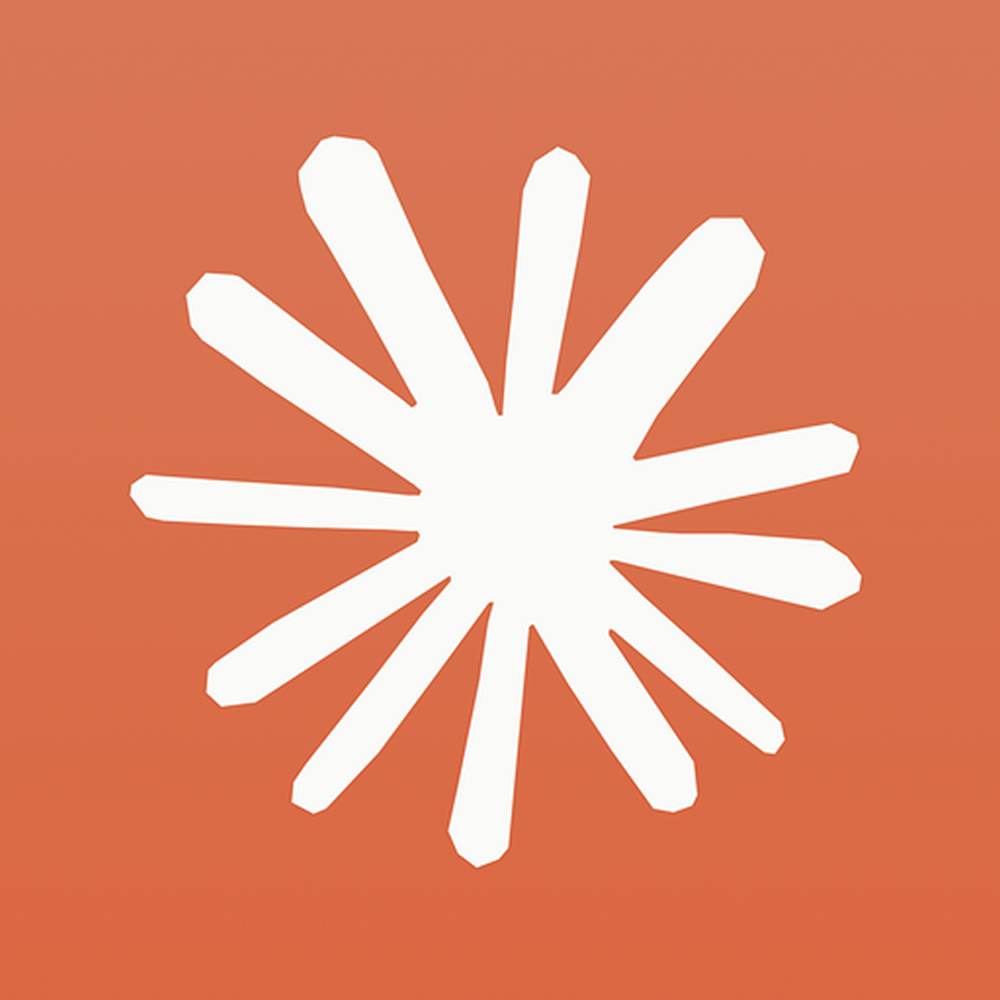
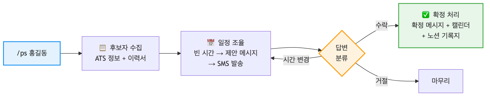
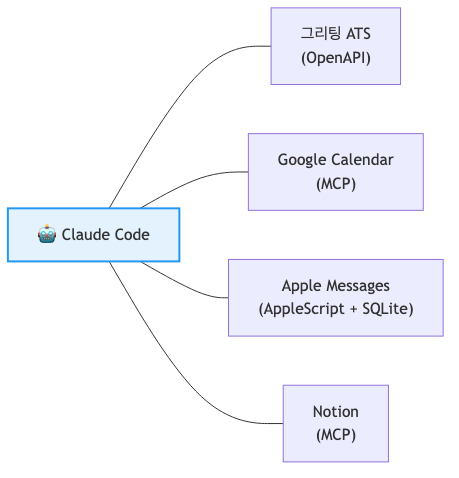
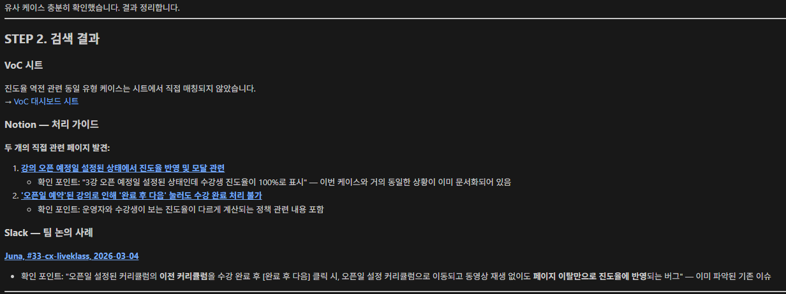
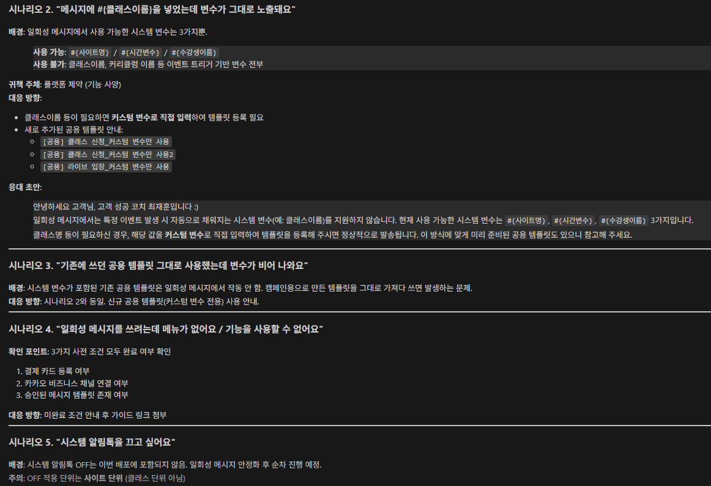
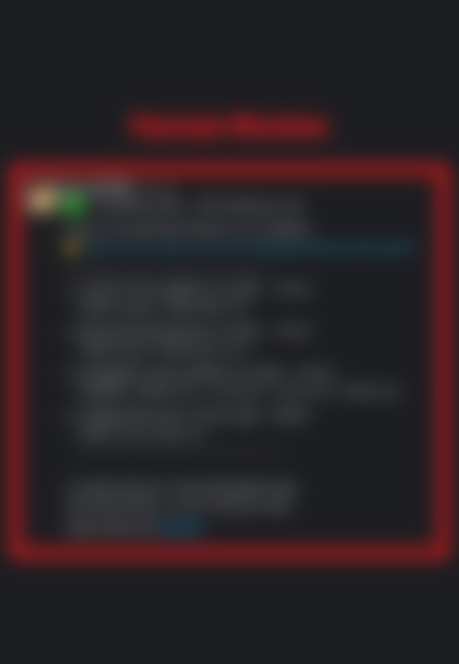
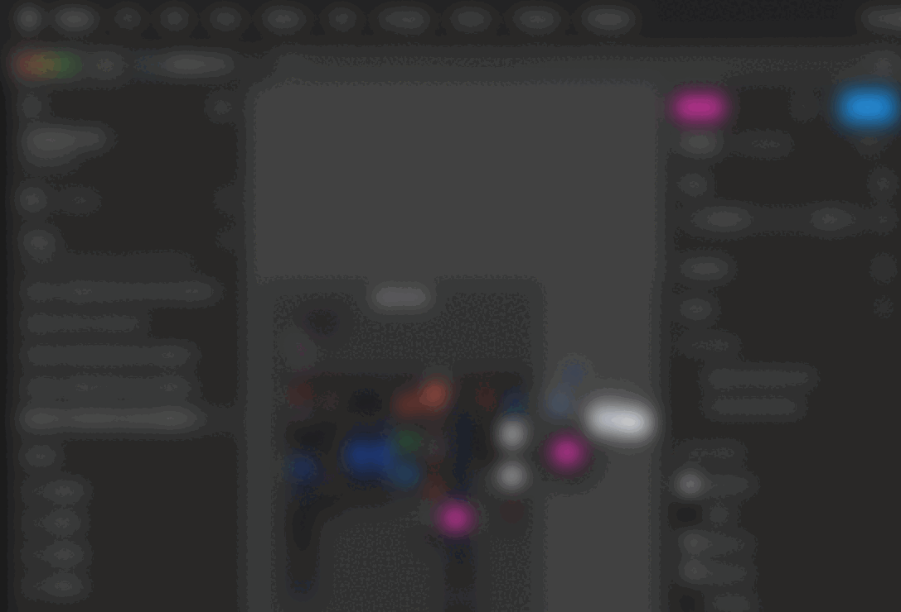
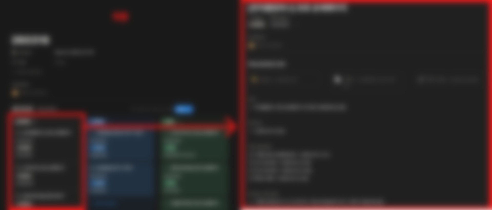
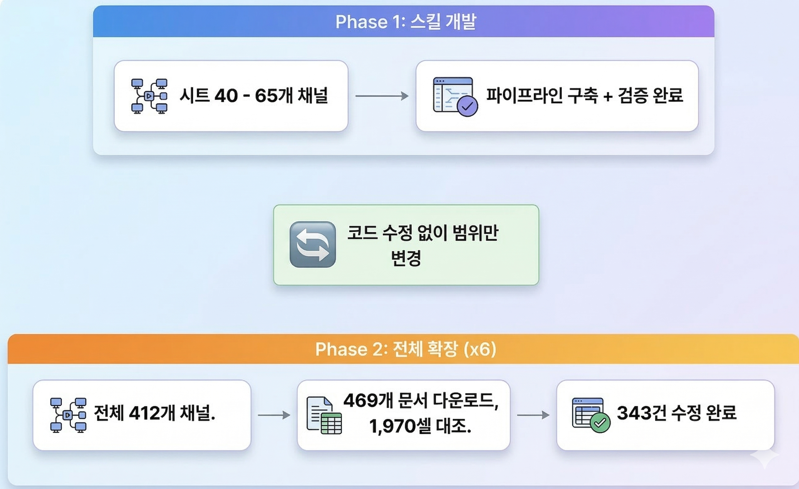

LiveKlass × Claude Code 2026. 3. 13

"AI 도구를 잘 쓰는 기업" ≠ AI-Native한 기업
AI-Native 서비스를 만들어야 한다 ← AI-Native 조직에서 그런 서비스가 나온다 ← 모든 구성원이 일하는 방식 자체를 바꿔야 한다
도구도 알려주고, 개념도 알려주지만 — 멘탈모델을 바꾸는 캠프
"자동화하고 싶은 업무 1가지를 가져오세요."
로켓런칭 리드 자동 분석 — "리드 분석해줘" 한 마디로 심사까지
해결하고 싶은 문제
리드 분석해줘
실은 시트에 신청자가 추가되면 알아서 프로세스가 돌아가는 완전 자동화를 원했음
리드 분석해줘 한 마디로 1차 심사 전체 파이프라인 실행
리드 분석해줘 → 수집 → 중복 체크 → AI 분석 → Notion 생성 → Slack 알림까지 자동 실행
"내가 더 편해져서 만든 건데, 회사만 좋게 생겼네 에이"
폰스크리닝 자동화 — /ps 홍길동 한 줄이면 끝
/ps 홍길동
문제: 후보자 1명당 일정 조율 → 메시지 발송 → 답변 대기 → 캘린더 → 인터뷰 기록지… 30~40분
해결: Claude Code 스킬 /ps로 전체 플로우 자동화
/ps

/ps 홍길동 한 마디로 수집 → 일정 조율 → 발송 → 확정 → 기록지 전체 자동 실행
/ps 한 줄로 생성된 실제 iMessage 대화 제안 → 수락 → 확정까지 자동 처리

4개 외부 서비스를 비개발자가 직접 연결 — OpenAPI · MCP · AppleScript + SQLite
"실제로 돌려보니 발견한 문제를, 직접 고쳤다."
연동 서비스: 그리팅 ATS · Google Calendar · Apple Messages · Notion
"비개발자가 4개 서비스를 연결하고, 후보자 통화 제외한 폰스크리닝 전후 업무의 93%를 자동화했다."
폰스크리닝은 시작일 뿐 — 채용 전 과정을 자동화해 나갈 계획
/arrange
후보자 통화는 자동화하지 않는다 — AI면접관 도입 계획 (아직) 없음
"자동화의 목적은 모든 것을 자동화하는 게 아니라, 사람이 해야 할 일에 집중할 수 있도록 나머지를 덜어주는 것"
CX 어시스턴트 — 상담 스크린샷 하나로 분류·검색·응대까지
문제: 채널톡 문의마다 VoC 시트·Notion·Slack을 각각 수동 탐색 신규 입사자일수록 맥락 파악에 시간이 걸려 응답이 느려짐
해결: 채널톡 상담 스크린샷을 첨부하면 4단계 자동 처리
경험에 의존하던 암묵지를 시스템으로
"누구든 동일한 품질로, 빠르게 대응할 수 있는 구조"

처리 완료 케이스를 메모리에 패턴화
VoC 대시보드 시트 검색 최적화
제품 릴리즈·이슈를 CX가 자동으로 파악

"내 '존재'가 조직의 '병목'이라는 의식, 그 의식에서 벗어나고자 했던 '집착'이 저만의 동력이었습니다."
디자인 시스템 자동화 시도기 — "작고 실제로 작동하는 것"
처음 구상: Figma 변경 → 토큰 자동 추출 → FE 전달 → Slack 알림까지 한 흐름
부딪힌 현실:
→ 범위를 계속 좁혀서 내가 통제 가능한 가장 작은 지점을 찾기로
구현: Notion DB 버튼 클릭 → Slack #fepd-collab에 FE 멘션 + 문서 링크 자동 발송
#fepd-collab
직접 코드를 짠 것도, API를 연결한 것도 아니다. Claude Code에 물었더니 Notion Automations 기능을 알려줬다. 몰라서 못 쓰고 있던 기능 — 실제로 작동하고, 실무에서 쓰이고 있다.
보너스: 디자인 토큰 리부트 시 Claude Code로 네이밍 일괄 변환 스크립트 활용
"자동화의 첫 단계는 코드가 아니라, 내 업무를 들여다보는 것이었다."
강의 링크 하나로 리드마그넷 + 워크북 PDF 자동 생성
문제: 영상 강의의 핵심을 빠르게 학습하고 실천으로 연결하고 싶은데, 자막 추출 → 요약 → 재구조화까지 5단계 수작업
해결: /product_create 커맨드 하나로 스크래핑 → 요약 → 워크북 + 리드마그넷 PDF 원스톱 생성
/product_create
결과: 고객사 강의 링크만 입력하면 상용화 수준의 PDF 3종 자동 생성
라클 고객사에게 제공하는 가치
"내 강의를 선택하기만 하면, 리드마그넷이랑 워크북이 자동으로 나와요"
핵심은 엔진 구현보다 프롬프트 반복 개선으로 상용화 수준 퀄리티 확보
디자인 요청 취합 에이전트 — Slack·Notion에 흩어진 요청, AI가 알아서 모아준다
문제: Slack 2개 채널 + 개인 DM + Notion 등 4개 채널에서 들어오는 디자인 요청을 수동 취합 & 정리에 약 30분가량 소요
Slack 2채널 + DM을 1시간마다 자동 스캔 월~금 9시~19시, 정각마다 디자인 관련 메시지 수집
Notion 액션 플랜의 디자인 요청도 함께 수집 Slack + Notion, 흩어진 요청을 한 곳으로

수집된 후 필터링된 요청을 Slack DM으로 Arin에게 전송 확인 후 승인 — 1시간 무응답 시 자동 승인

신규 Task → Figma 플러그인 버튼 한 번으로 페이지 자동 생성 + Notion Task에 링크 삽입

칸반 보드 + 개별 Task 상세 — Figma 링크, 기획안, 데드라인, 작업 단계까지 자동 기입
"뚜렷한 작업 플로우 + 디테일한 조건만 잘 제시해준다면 누구나 쉽게 가능하다"
연동 서비스: Slack · Notion · Figma · Cron 스케줄러
거래처 사업자정보 자동 검증 — 412개 채널 × 6개 항목, 사람 눈 대신 AI로
문제: 2,000+ 거래처의 사업자등록증 정보를 시트와 수동 대조 → 30시간+ (사실상 불가능)
해결: Claude 멀티모달로 등록증 이미지 자동 읽기 + 시트 자동 대조
결과: 명령어 한 줄로 1,970셀 전량 대조, 343건 불일치 자동 수정 + 색상 표시
"사람 눈으로 불가능한 전수 검증이, AI로 가능해졌다."

멀티모달 AI = 문서를 "눈으로 읽는" AI
컬럼별 불일치 분포 (총 343건)
"문서(원본)가 가장 정확하다" — API 데이터와 사업자등록증이 다를 때, 항상 원본 문서를 기준으로 판단한다.
연동 서비스: LiveKlass API · Claude 멀티모달 · Google Sheets API · Python
"단순 자동화가 아니라, 판단 기준을 명확히 설정했다."
비개발자가 터미널에서 자기 업무를 자동화했습니다.
5분 후 2부가 시작됩니다
특별 외부 연사 (별도 슬라이드)
What to do & How to do
"도구는 배우는 게 아니라, 쓰면서 익히는 겁니다."
Made with Claude Code × Marp simple is best